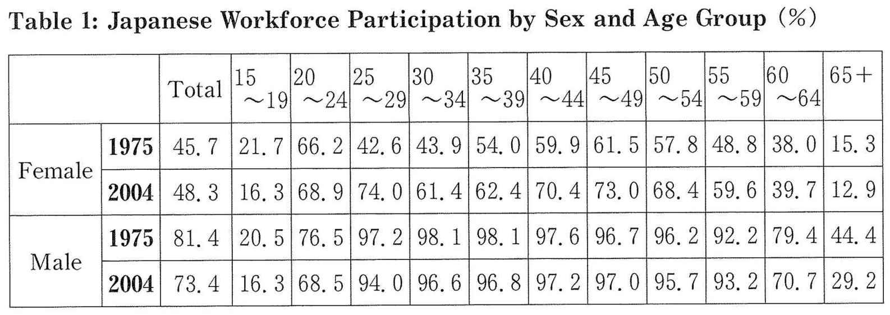
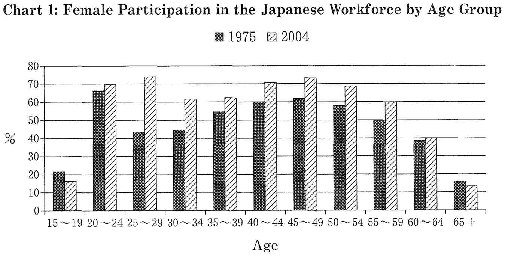
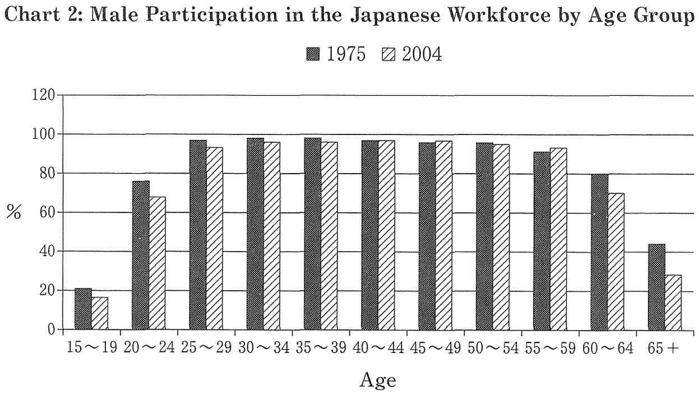
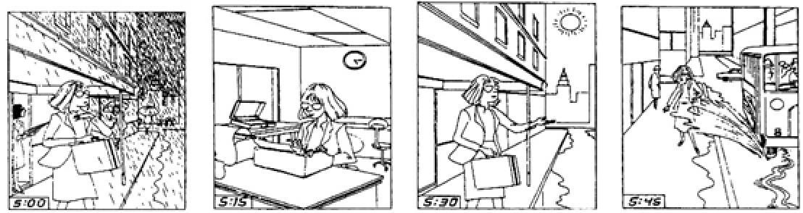

| 大学入試 自由英作文問題 モデル解答集 ＜第3集＞ 改訂版 | |
| 塩川 春彦 | |
| (2017) | |
塩 川 春 彦
帝京科学大学医療科学部（千住キャンパス）教授。
1990年代より、文科省検定済英語教科書Unicorn シリーズ（文英堂）の執筆に携わっている。特に、旧指導要領下の「ライティング」、現指導要領下の「英語表現」では、中心執筆者を務めている。
教科書執筆者としては、「良質な教科書」「結果として入試にも役立つ教科書」を目指していたので、大学入試における自由英作文に注目してきた。また、"高校生のライティング能力をどのように伸ばすべきか"という問題意識は当然持っていたので、自由英作文問題対策の参考書にも目を配ってきた。
「こんな対策本があってもよいのではないか」と思い立って執筆したのが本書である。
その他の主な著書
『英語が使える日本人の育成』（共著、三省堂）
『Interface―ビジネス英文メール入門』
（マクミランランゲージハウス）
『Introduction to MBA English―英語で学ぶ経営学の基礎』
（マクミランランゲージハウス）
『英文ライティング・日英翻訳ベーシックコース』
（DHC総合教育研究所）
The Real World Today（桐原書店）
20 STEPS TO CRITICAL WRITING（共著、桐原書店）
本書は、大学入試における自由英作文問題の典型的な論題群と、それらに対する解答例を提示している。本書の対象は、"志望校の読解問題だけでも確実に合格水準の得点をし、加えて英作文問題で得点を上乗せしたい"という意欲のある受験生である。
本書には、他の自由英作文問題対策参考書に見られない特徴がある。それは、解説を最小限に抑え、受験生には、限られた時間にできるだけ多くの解答例を読むことに集中してほしいという意図を持っていることである。このような意図を持った書籍があってもよいだろうと思ったことが、本書を出版しようと思い立った動機である。
以下に、本書のねらいについて説明する。
本書のねらい
1 自由英作文のための知識の基盤をつくる
本書を読み通すことにより、自由英作文の典型的な諸論題について、"こんな論題にはこういう論点があり、こういう英語表現を用い、このように論理を展開すればよい"という、基本的知識の基盤が形成されるはずである。
ここで言う「基本的知識の基盤」が意味することを具体的に説明したい。本書の解答例の中に出てくる単語やイディオムは、英語を書く際に"使える"語彙である。また、本書の解答例は基本的に、"主題文―支持文―結語"という英語の文章の基本的な構成法にしたがっているので、読み通すことで文章の構成パターンも身につく。さらに、典型的論題群の解答例を読み通して得た知識を組み合わせることによって、他の様々な論題に対応することが可能となるのである。このことは、実際に本書の各章の解答例の後に掲載した「類似論題」「関連論題」の項目を参照し、確かめてほしい。
2 アウトプットの前にインプットを
先に「多くの解答例を読むことに集中してほしい」と書いた。このことの意味を、次に説明したい。ライティングの力を伸ばすためには、"書いて添削してもらうこと"を繰り返す必要があるとされている。それはその通りである。しかし、社会問題の知識も乏しく、ライティングのために"使える"語彙力も貧しく、英語の文章の構成法をきちんと学んでいない学習者が書いた英作文には、せいぜい文法の誤りを添削することくらいしかできない。結局、手本を提示し、「このように書きなさい」となるのである。
やみくもに英作文する前に、"ライティングの手本になる英文"をたくさん読んだ方がよい。一定量以上の良質のインプットがなければ、良いアウトプットはあり得ないのである。ただし、入試の読解問題の英文、進学校で使われる読解用テキストの英文の多くは、受験生にとって"ライティングの手本になる英文"ではない。使われている単語が難しかったり，構文が複雑だったり、書き手の個性が強く出た文体であったりするからである。本書では、日本人学習者にとっての"ライティングの手本になる英文"を提示しているつもりである。
3 日本語訳から英文再現へ
本書では、後半部分に解答例の日本語訳を掲載している。これらの日本語訳から英文を再現する練習を通して、本書で学んだ知識を血肉化してほしい。
本書は、まず、5巻シリーズとして出版するが、巻を重ねてできるだけ多くの論題に対する解答例を提示していきたいと考えている。本シリーズが受験生のライティング力向上に役立つことを切に願っている。
2016年11月
著者しるす
本書における論題の選定の元になっているのは、著者が作成した過去20年余りの国公立大学の自由英作文問題のデータベースである。本書で取り上げた論題ごとに、他大学で出題された同一論題や類似論題に関する情報を付記しているが、それらは、このデータベースに基づいている。
このデータベースにより、「頻出論題」群も把握でき、「小学校の英語教育の是非」に代表される頻出論題群は当然に取り上げている。
論題選定の基準とデータベース
しかし、論題選定の基準は、"頻出かどうか"だけではない。環境・資源、政治、経済、社会、教育、科学、医療・医学などの分野にまたがる論題群、「尊敬する人」のような信条・好みを書かせる論題群などを概観し、バランスを重視して、本書掲載の論題を選定している。それは、「まえがき」でも述べたように、本書を通して、自由英作文のための「知識の基盤」となるものを提供したいからである。バランスのとれた論題の選定のためにも、このデータベースが貢献している。
本書における論題選定は、著者の気まぐれや好みでなされているわけではないことを強調しておきたい。
各章の構成
・論題
・解答例
・英文の構成
解答例の英文のアウトラインを示す
・過去20年のデータ分析
国公立大学入試における過去20年余りの出題実績データから、同一論題、類似論題、関連論題をピックアップ、本書が示す解答例の応用範囲を示す
[図表・統計解釈～ジェンダー]
The following information in Table 1, Chart 1, and Chart 2 shows data about Japanese work patterns. Write an essay explaining changes in the female participation in the workforce compared to the male participation in 1975 and in 2004. ＜80 words＞
（小樽商科大学）
＊図表は次ページ以降に掲載
＊解答例は図表の後に掲載



性別労働参加率統計の分析
解答例
These graphs indicate at least two things. First, women's participation rates in the workforce became lower in the age groups between 30 and 44. In contrast, men did not show this trend. Second, there was a large increase in women's participation rates in 2004 compared to 1975. In 1975, they were around 50 percent between the age groups of 30 and 44. On the other hand, they became more than 60 percent in 2004. (74 words)
＊英文の構成は次ページに掲載
英文の構成
主題文：
これらの図表は、少なくとも２つのことを示す
支持文： ＜図表が示すことを列挙＞
(1) 女性の労働参加率は、30歳から44歳の間で低くなっている
(2) 女性の労働参加率は、1975年と比べると、2004年には大きな上昇があった
性別労働参加率統計の分析
過去20年のデータ分析
ほぼ同一の論題を出題した大学
広島大学
類似論題
「男女機会均等は実現しているか」（長崎大学など）
関連論題
「家事分担について」「男性優位の職場への女性の進出」「ジェンダーステレオタイプについて」（北海道大学など）
[社会～情報技術]
Write one paragraph (about 100 words) in English explaining the advantages or disadvantages of the Internet.
（公立はこだて未来大学）
＊解答例は次ページに掲載
インターネットの利点と欠点
解答例
The Internet has both advantages and disadvantages. Its greatest advantage is that you can use it to discover information that you need, and to communicate with people all over the world. Another advantage is that the Internet has also made people's lives more convenient by allowing them to do things such as downloading music and shopping online. To illustrate the disadvantages of the Internet, it is possible for personal information such as credit card details to be stolen by criminals. Computer viruses, which can destroy your computer files, are often sent accidentally or intentionally. Using the Internet gives you enormous benefits, but you must be aware of the risks. (109 words)
＊英文の構成は次ページに掲載
英文の構成
主題文：
インターネットには利点と欠点がある
支持文： ＜利点と欠点の列挙＞
（利点1） 情報の入手、世界中の人々とのコミュニケーション
（利点2） 暮らしを便利に。（音楽のダウンロードなど）
（欠点1） 個人情報が盗まれることもある
（欠点2） コンピュータウイルス
結 語：
便利だがリスクに注意すべし
インターネットの利点と欠点
過去20年のデータ分析
同一の論題を出題した大学
都留文科大学
類似論題
「インターネットが社会、文化、生活に与えた影響（とその評価）」（静岡大学など5大学）
[社会～環境・資源、科学技術、経済、戦争]
"Human beings have made the earth a better place to live in." Do you agree or disagree? Give three reasons to support your answer.＜About 200 words＞
（長崎大学）
＊解答例は次ページに掲載
人類は地球を住みやすい場所にしてきたか
解答例１（賛成）
The 21st century still finds a lot of problems to solve on this planet, such as environmental destruction, the large economic gap between the rich and the poor, terrorism, refugees, and so on. However, I think, we could say that human beings have made the earth a better place to live in mainly by developing science and technology.
First, human beings have gained healthier lives for people by developing medical science and medical care. Second, modern technology has promoted sanitary and comfortable lifestyles in many places in the world. Third, food production has been increased by improved farming techniques. All of these have contributed to increasing life expectancy in much of the world.
Also, I would like to look at the cultural aspects of humankind. Humans have developed transportation technologies by which individuals can travel comfortably to distant places. They have also developed information technologies, which make it possible for people to communicate with each other from different corners of the world. Certainly, these technologies have been used in cutthroat capitalism and for military purposes. However, it is also true that they have promoted people's global cooperative relations between individuals, academic organizations, industries and businesses, government offices, and so on, for a better world. (204 words)
＊英文の構成は次ページに掲載
英文の構成
序論： ＜メインアイデアの提示＞
解決すべき問題は多いが、人類は地球をより住みやすくしてきた
本論： ＜メインアイデアを支持する具体例の提示＞
（1） 医学・医療の進歩、健康・衛生における改善、食糧増産、平均余命の伸長
（2） 輸送技術、情報技術の発達
（3） 地球規模での人々の交流、協力
＊次ページに解答例2を掲載
人類は地球を住みやすい場所にしてきたか
解答例２ (反対)
Human beings have not made the earth a better place to live in.
First, humans are running out of natural resources, such as forests, marine resources, and fresh water, just to name a few. This has had serious negative effects on ecosystems, threatening the survival of human beings.
Second, humans have been polluting and damaging the environment, wiping out thousands of species. Needless to say, environmental destruction lowers human quality of life, too. In urban areas all over the world, people breathe polluted air. Many Japanese people eat radiation-polluted food. These are just two examples among many.
Third, humans have made the earth worse by fighting many wars. Especially, since humans developed weapons for massive destruction, such as bombs, bombing planes, and missiles, wars have meant destroying cities and land, not just killing people. The number of all the war dead, including soldiers and civilians, in the 20th century is said to be more than 100 million in the world. Wars are not natural disasters, but a human-made disaster. Even in the 21st century, regional conflicts are continuing.
In conclusion, humans have not been successful in making the earth a peaceful and sustainable place. (194 words)
＊英文の構成は次ページに掲載
英文の構成
序論： ＜メインアイデアの提示＞
人類は地球をより住みやすくしてきていない
本論： ＜メインアイデアを支持する具体例の提示＞
(1) 天然資源の枯渇化、人類の生存を脅かす
(2) 環境破壊、人類の生活の質の低下
(3) 戦争による大量殺戮、国土の破壊
結論：
人類は地球を平和で持続可能なものにしていない
人類は地球を住みやすい場所にしてきたか
過去20年のデータ分析
類似論題
「地球の未来はどうなるか」「地球規模の環境汚染と対策」（岡山大学など）
関連論題
環境・資源問題をテーマにした論題は、40以上の大学から計50回以上出題されている。それらのうち3分の1は、「省エネ・省資源のためにできることの具体例」（一橋大学ほか）という頻出論題で、解答例は本書＜第1集＞に収録している。
[社会～言語・コミュニケーション]
Write 120 to 150 words of English on the statement below.
Governments must protect and promote so-called "endangered" languages that are disappearing quickly today. Explain why this is true.
（一橋大学）
＊解答例は次ページに掲載
絶滅危惧言語を守るべき理由
解答例
It is said that about half of the 6,000 languages spoken in the world today are going to disappear by the end of this century. Governments must protect those endangered languages for the following reasons. First, the loss of language diversity means the loss of cultural diversity, and that is very problematic. Language is the most important element of a community. When it dies, humans lose the special knowledge of that culture and its region. Another reason why those languages must be protected is their benefit to the study of language. For example, many linguists try to find some universal elements among human languages. The more languages they study, the more likely they are to find these elements. Some people may think that language integration is good because it deepens mutual understanding among nations and promotes global economic activities. However, language diversity should be maintained. (145 words)
＊英文の構成は次ページに掲載
英文の構成
主題文：
各国政府は、絶滅危惧言語を守らなくてはならない。
支持文：
(1) 第1に、言語の多様性の喪失は、文化の多様性の喪失を意味する
(2) 言語の研究への有益性
（反論）言語の統一は良いことだと考える人々もいる
結 語：
しかし、言語の多様性は守られなければならない
絶滅危惧言語を守るべき理
過去20年のデータ分析
類似論題
「もし世界の言語が一つだったら」「国際コミュニケーションにおいて、英語が他の諸言語に比べて圧倒的に優位な立場にあることについての考察」（東京大学など）
関連論題
「英語公用語化論への賛否」「英語の企業内公用語化への賛否」（一橋大学など4大学）
[社会～犯罪]
Write about the following topic using 100 words of English.
The death penalty should never be used.
（一橋大学）
＊解答例は次ページに掲載
死刑は廃止されるべきか
解答例
The death penalty should be abolished, and instead real "life sentences" should be imposed on terrible criminals. There are several reasons. First, it is a well-known fact that there is no clear connection between crime rate and the death penalty. Second, mistakes could be made in sentencing people to death. If a prisoner is wrongly killed, nothing can be done to recover the loss. Third, punishment is not revenge for the crime but a method of isolating and educating people who committed the crime. Lastly, it should be remembered that order and stability in society is ensured more effectively not through fear of death but through better education, opportunities for young people, and economic prosperity. (115 words)
＊英文の構成は次ページに掲載
英文の構成
主題文：
死刑は廃止すべき
支持文： ＜理由の列挙＞
（理由1）犯罪率と死刑の間には明確な関係がない
（理由2）間違って死刑宣告することがあり、これは取り返しがつかない
（理由3）刑罰は、復讐ではなく、犯罪者を隔離し教育する方式である
（理由4）社会の秩序は、教育や経済的繁栄などを通して保証される
死刑は廃止されるべきか
過去20年のデータ分析
同一論題を出題した大学
電気通信大
関連論題
「凶悪犯罪増加の原因」「少年犯罪への罰則を強化すべきか」「失業率と犯罪件数」（愛媛大学など）
[医療・医学]
The issue of euthanasia (terminating the life of a patient on request), has been raised in several recent news stories. Explain your ideas on the arguments for and against the role of doctors assisting in terminating a patient's life.＜At least150 words＞
（浜松医科大）
＊解答例は次ページに掲載
積極的安楽死に医師はどう向き合うべきか
解答例
In Japan, active euthanasia, or terminating the life of a patient on request, is illegal in principle. A doctor who cuts short the life of a dying patient to relieve the patient's great pain might be convicted.
If I were a medical doctor, I would think that active euthanasia should be legalized under strict conditions. In some tragic cases, no matter how much treatment a patient is given, a slow and painful death is inevitable. In such a case, extending the patient's life will just prolong the physical and emotional pain of both the patient and family. Active euthanasia is part of an individual's right to pursue better quality of life. Of course, strict guidelines are necessary to prevent abuses. The guidelines should include at least the following conditions: 1) the patient must be suffering unbearable pain; 2) death is inevitable and close at hand; 3) there is no other way to relieve the patient's pain; and, 4) the patient has clearly expressed a desire not to have life prolonged artificially. In conclusion, active euthanasia is not murder but an act of mercy. (183 words)
＊英文の構成は次ページに掲載
英文の構成
第1パラグラフ：
日本において積極的安楽死は違法、という説明
第2パラグラフ
主題文：
積極的安楽死を厳格な条件の下で合法化するべき
支持文： ＜理由と条件の論述＞
・苦痛に満ちた死が避けられない患者もいる
・その場合、患者の延命をすることは、患者の苦痛を引き延ばすだけだ
・積極的安楽死は、個人のより良い生活の質を求める権利の一部
・ただし、乱用を防ぐために、次のような厳格な指針が必要
1) 耐え難い苦痛に苦しめられている
2) 死が目前に迫っている
3) 苦痛を取り除く方法が他にない
4) 人工的な延命はしてほしくないという意思を表明してある
結 語：
積極的安楽死は、慈悲の行為であって殺人ではない
＜編者注＞ この解答例は、一般的な説明、広く受け入れられている論で構成した。この解答例のなかで言及している4要件は、有名な「横浜地裁4要件」と呼ばれているものである。この解答例を頭に入れておけば、安楽死関連の論題にたいてい応用できる。
積極的安楽死に医師はどう向き合うべきか
過去20年のデータ分析
ほぼ同一の論題を出題した大学
一橋大学
[社会～医療・医学]
Describe what you think are a doctor's main duties (apart from "helping people" or "saving life"), obligations and responsibilities. ＜At least 150 words＞
（浜松医科大学）
＊解答例は次ページに掲載
医師の義務
解答例
A doctor's main duties are to help people feel better and to save lives. In addition to these two duties, I believe, education and research should be included in a doctor's obligations. First, a doctor should be more actively involved in preventive health-care activities in the community he/she belong to. Needless to say, providing information on preventive care should be the core. This may mean that doctors will become busier, but preventive health-care has both economic and health benefits. If people in the community become healthier, it will reduce the burden of the doctors and the community. Second, doctors should continue to study new medical procedures and treatments. Also, doctors should be involved in teaching medical students and younger doctors on better treatments and improvements in remedies and surgeries. In summary, doctors should be educators and researchers, as well as healthcare providers. After all, a doctor's obligation is to contribute to people's health. (153 words)
＊英文の構成は次ページに掲載
英文の構成
主題文：
医師の義務には、人々を快適にさせ命を救う以外に、教育と研究が含まれる
支持文：
（義務１）地域社会における予防医療活動に参加する
（義務2）医療処置や治療法について学び続け、医学生や若い医師たちに教育を施す
結 語：
医師たちは、医療提供者、教育者、研究者として人々の健康に貢献すべき
＜編者注＞ この解答例は「自分の医師としての将来像」（浜松医科大学）という論題にも応用できる。
医師の義務
過去20年のデータ分析
関連論題
「自分の医師としての将来像」「若手医師の地方勤務を義務づけるべきか」（浜松医科大学）
[社会～教育・学習]
以下の意見に対して，賛成か，反対か，あなたの立場を明らかにし，その理由と共に100語程度の英語で書きなさい。
"School uniforms should be prohibited."
（高知大学）
＊解答例は次ページに掲載
学校制服の是非
解答例1 （賛成）
I agree with the opinion that school uniforms should be prohibited for the following reasons. First, uniforms are a way of making every student think and act alike, but students are individuals who have their own styles of thinking and acting. It is one form of enforced conformity, which is seen everywhere in Japan. Second, high school students are not children: they are perfectly able to choose by themselves what to wear each day. In short, what to wear is a part of people's self-expression, and uniforms discourage their individuality and diversity, which are essential to democracy. (97 words)
＊英文の構成は次ページに掲載
英文の構成
主題文：
学校制服は禁止されるべきだ
支持文： ＜理由の列挙＞
（理由1）生徒たちの思考・行動を画一化する、同調強要の一形態
（理由2）中高生は、何を着るかを自分で選ぶことができる
結 語：
制服は、人々の個性や多様性を抑圧する
＊次ページに解答例2を掲載
学校制服の是非
解答例2 （反対）
I don't agree with the opinion that school uniforms should be prohibited. I do not think that school uniforms are a bad idea. For one thing, they are convenient: if students didn't wear uniforms, just think of the time they would waste each morning choosing which clothes to wear. Secondly, school uniforms make the parents' economic disparity less apparent. This benefit should be reconsidered in today's Japan, where there is a widening gap between the rich and the poor. Many students think school uniforms deprive them of their freedom. However, I think real freedom has nothing to do with school uniforms at all. (103 words)
＊英文の構成は次ページに掲載
英文の構成
主題文：
学校制服を禁止すべきでない
支持文： ＜理由の列挙＞
（理由1）第1に、制服は便利、毎朝の服選びの時間が節約できる
（理由2）学校制服は、親たちの経済格差を見えにくくする
（反論と再反論）学校制服は自分たちの自由を奪うと多くの学生は考えているが、真の自由は学校制服とは関係がない
学校制服の是非
過去20年のデータ分析
同一の論題を出題した大学
京都府立大学
類似論題
「茶髪禁止の是非」「荷物検査の是非」「適切な校則」（広島大学など）
[社会～スポーツ]
The Olympic Games was held in London in 2012. The hosting of the games cost about 90 billion pounds (≒1.140 billion yen). Some people approved of spending money on hosting the Olympics. Other people felt that this was a waste of public funds.
The question: Should public funds be used to host the Olympic Games? ＜80 words＞
（北九州市立大学）
＊解答例は次のページに掲載
オリンピック開催に公的資金を投入することの是非
解答例
No, public funds should not be used to host the Olympic Games, which is not highly important. There are many other issues, such as unemployment and health care, which should be tackled first. The money that goes into new stadiums and arenas can be used for things such as education and welfare. Many people mention the economic effects of the Olympics. However, they do not last long as shown by the example of Nagano city. (77 words)
＊英文の構成は次ページに掲載
英文の構成
主題文：
公的資金は、オリンピック開催のために使われるべきではない。
支持文：（理由の列挙）
（理由1）他に多くの問題があり、それらが先に取り組まれるべき
（理由2）新しいスタジアムや体育館に行く金は教育や福祉に使われることができる
（理由3）オリンピックの経済効果は、長続きしない
オリンピック開催に公的資金を投入することの是非
過去20年のデータ分析
関連論題
「東京オリンピック開催への賛否」「オリンピックが促進するのは国際親善かナショナリズムか」「オリンピックを国際親善のためのイベントにするにはどうすればよいか」「オリンピックの開催地はどこがよいか」（秋田大学、一橋大学など）
[信条・好み～国際交流]
あなたは外国人に日本のどのようなことを一番知ってもらいたいと思いますか。＜約60語＞
(富山大学)
＊解答例は次ページに掲載
外国人に日本のどのようなことを一番知ってもらいたいか
解答例（102語。[ ]内を省略すれば65語）
I want foreigners to know about Article 9 of the Japanese Constitution. The article says that Japanese people have given up war forever. This article has played an important role in establishing trust in relationships between Japan and the other Asian countries. [Japanese military forces have not taken military actions overseas and have killed no one since the end of WWII. You can understand how noteworthy it is if you consider what the former Japanese imperial forces did before 1945.] Thanks to Article 9, Japan has been in peace for more than 70 years. We can and should be proud of this fact. (102 words)
＊英文の構成は次ページに掲載
英文の構成
主題文：
外国の人々に日本国憲法9条について知ってほしい
支持文： ＜説明の論述＞
・この条文は、日本国民は永久に戦争を放棄したと述べている
・この条文のゆえに、他の国々との間の関係において信頼を築いてきた
・日本の軍隊は、第2次世界大戦後、海外の軍事行動に参加しておらず、だれ一人として殺していないことは特筆すべきことだ
結 語：
9条のおかげで、日本は70年以上にわたって平和が続いている
＜編者注＞ この解答例は、奇をてらったものではない。2015年以降、「憲法を変えるべきか」が日本の政治の主要テーマの一つになっている。今後、いくつかの大学が自由英作文問題の論題として憲法を取り上げることは十分ありえる。
外国人に日本のどのようなことを一番知ってもらいたいか
過去20年のデータ分析
同一論題を出題した大学
「日本の文化、社会に関して外国人に伝えたいこと」というような論題は、大阪大学など4大学で出題されている。
類似論題
「外国人訪問客を連れていきたい場所」「外国人に勧めたい訪問地」（福井大学など8大学）
[信条・好み～文化・娯楽]
Artistic products such as music and movies are nothing more than unnecessary luxuries. Do you agree or disagree with this statement? ＜About 100 words＞
（北九州市立大学）
＊解答例は次ページに掲載
芸術作品は不要な贅沢品か
解答例
Artistic products are not unnecessary luxuries at all. Art is part of people's lives. Art is everywhere: music, films, fashion, photos, poetry, dance, and so on. Art is a valuable medium of self-expression and another way for people to make statements that are political or humanitarian. It inspires people, gives people a change from ordinary life, and makes people develop morally and mentally. Also, art is one way people see beauty. Furthermore, some art, especially music, can relax our body and soul. Usefulness and effectiveness are not everything in people's lives. After all, artistic products humanize people's lives, no matter where they live. (102 words)
＊英文の構成は次ページに掲載
英文の構成
主題文：
芸術作品は不要な贅沢品ではまったくない。
支持文： ＜理由の列挙＞
（理由1）人々の生活の一部
（理由2）自己表現のための媒体
（理由3）人々を鼓舞し、人々を精神的に高める
（理由4）人々が美を見出す方法
（理由5）身体や精神をリラックスさせる
（理由6）有益性や効率性がすべてではない
結 語：
芸術作品は、人々の生活を人間的にする
芸術作品は不要な贅沢品か
過去20年のデータ分析
類似論題
「娯楽にかけるお金とエネルギーは無駄か」（東京工業大学）
[信条・好み～結婚]
Write at least 100 words about the following topic.
It is better to marry late rather than early.
（一橋大学）
＊解答例は次ページに掲載
早婚がよいか、晩婚がよいか
解答例
Which is good, to get married late or early in life? Each side has its own merits. If you wait to get married late, you can have more freedom in your younger years. Also, you can come to know yourself better ― who you are and what you want out of life. In this way, you may be able to find a better partner and be a responsible parent. On the other hand, if you get married early, you can be still young when your children have grown up. Furthermore, young parents usually have more energy to put into child rearing. Lastly, you may wait too long and not find a good partner. (113 words)
＊英文の構成は次ページに掲載
英文の構成
主題文： 晩婚も早婚も、それぞれに利点がある
支持文： ＜それぞれの利点の列挙＞
（晩婚の利点）若い時に多くの自由、自分自身をより深く知る、より良い伴侶を見つけられる
（早婚の利点）子どもの成長後も自分はまだ若い、子育てのためのエネルギーを多く持っている、結婚を長く待ちすぎると、良い伴侶を見つけられないかもしれない
早婚がよいか、晩婚がよいか
過去20年のデータ分析
関連論題
「同性婚が認められるべき理由」「日本在住で同性婚を望む個人へのアドバイスを書く」（一橋大学など）
[信条・好み～友人]
What is a "good friend"? What do you think about the necessity of friends? ＜About 100 words＞
(香川大学)
＊解答例は次ページに掲載
良い友人とは
解答例
I will write about what is a "good friend" because I think having good friends is important. First, good friends help you when you have a problem. Good friends listen to your problems and concerns without being critical. They are also honest and trustworthy, and you can discuss your problems with them. Second, good friends are people you can also have fun with. When you share various experiences together, such as watching sports or going to a movie, it is much more enjoyable than doing these things alone. Good friends are always there for you throughout the good and bad times. (101 words)
＊英文の構成は次ページに掲載
英文の構成
主題文：
良い友人とは何かについて書く
支持文：
（定義１）困難な時に助けてくれる
（定義２）楽しみを共有できる
結 語：
いつもあなたのためにいる
良い友人とは
過去20年のデータ分析
同一論題を出題した大学
東京学芸大学など2大学
類似論題
「友なしでは生きていけない理由」「友人関係を維持する方法」（一橋大学など）
関連論題
「友人関係は、狭く深くか、浅く広くか」「小学校時代の友人が最高か」「幼なじみについて」「友人から学んだこと」（大阪教育大学など）
[信条・好み～マンガ]
"It is true that comics often contain a lot of violence and sex scenes, but some comics are as educational as school textbooks. For example, ...." で書き始めて、自分がこれまで出合ったマンガで特に感銘を受けた作家や作品を挙げて、内容の紹介や良かったと思った理由などを書きなさい。 ＜80－100語＞
（岐阜大学）
＊解答例は次ページに掲載
感銘を受けたマンガ
解答例
It is true that comics often contain a lot of violence and sex scenes, but some comics are as educational as school textbooks. For example,Hadashi no Gen (Barefoot Gen) is excellent. The story is about the tragedy of war and the importance of peace. In fact, many elementary school libraries have the series ofHadashi no Gen. Another example isBlack Jack by Tezuka Osamu. This is a story about a medical doctor. It makes the readers think about ethical and philosophical questions related to medicine. (87 words)
＊英文の構成は次ページに掲載
英文の構成
主題文：
学校の教科書と同じくらい教育的なマンガもある。
支持文： ＜具体例の列挙＞
（具体例1）『はだしのゲン』、戦争の悲劇と平和の大切さ
（具体例2）『ブラック・ジャック』、医療に関係する倫理的、哲学的な問いかけ
過去20年のデータ分析
類似論題
「感銘を受けた本」「楽しめる本」「好きな映画」「好きな作家」（静岡大学など）
[希望・夢～人生設計]
Do you have any specific long-term goals? What is one and how do you plan on reaching it?
＜About 100 words＞
（名古屋市立大）
＊解答例は次ページに掲載
大学入学後の将来設計
解答例
One of my long-term goals is to become a researcher in biotechnology. Achieving my goal will require a lot of hard studying, as well as money. Since my parents are not wealthy, I will have to attend a public university, where the tuition is less expensive than that of private universities. I hope to win a scholarship to help pay for my education. After graduating from university, I plan to enter a graduate school to receive a master's degree, and then a doctor's degree in biotechnology. Finding a position at a research laboratory or university will be my last challenge. (100 words)
＊英文の構成は次ページに掲載
英文の構成
主題文：
私の長期目標は、生命工学の研究者になること
支持文： ＜目標達成までの計画の記述＞
国公立大学への進学 ― 奨学金の獲得 ― 大学院進学 ― 研究者として職を得る
＜編者注＞ この解答例は、biotechnology という部分だけ言い換えれば、どの受験生も模倣できるように意図的に作成した。「将来設計」というタイトルの物語創作だと思えばよい。
大学入学後の将来設計
過去20年のデータ分析
類似論題
「大学で何を学びたいか」「大学で何をしたいか」「10年後の自分」（一橋大学など）
関連論題
「専門の勉強以外でしたいこと」（宮城教育大学など）
[物語創作～４コマ漫画に基づいて]
Make a story in English from these pictures.＜Around 100 words＞
（旧神戸商科大学）
＊絵は次ページに掲載
＊解答例は絵の後に掲載

4コマ漫画に基づいて物語を作る
解答例
This is the story of an unlucky day a woman had. As soon as the woman finished work at 5 pm, it began to rain. She went back into her office to wait for the rain to stop. She did not want to ruin her suit since she was going to have dinner with her boyfriend at a restaurant. It was not long before the rain stopped. She left her office at five thirty and had no idea what would happen later. As she was walking toward the restaurant, a bus passing near her hit a big puddle of water, splashing her and ruining her suit. (106 words)
＊英文の構成は次ページに掲載
英文の構成
5時からの４つの出来事を時間的順序にしたがい叙述している。
4コマ漫画に基づいて物語を作る
過去20年のデータ分析
類似論題
絵・写真を言葉で説明する問題
一橋大学など20大学で30回以上出題されている
4コマ漫画などのマンガを言葉で説明する問題
東京学芸大学など10大学で少なくとも13回出題されている
絵を見て物語を創作する問題
神戸市外国語大学など5大学で出題
[客観説明～日本文化社会]
「修学旅行」というものを外国人によくわかるように100語程度の英語で説明しなさい。
（弘前大学）
＊解答例は次ページに掲載
「修学旅行」を外国人に説明する
解答例
Shugaku ryoko refers to a school trip. School trips give students an opportunity to see different parts of the country and to experience group travel. It is perhaps the most memorable school events for elementary, junior high, and senior high school students in Japan.
Traditionally, students have visited various places of historical, cultural, or industrial interest in Japan, such as Kyoto. Since the 1980s, Hiroshima and Nagasaki, where atomic bombs were dropped, have been common places for school trips. And since traveling by plane became common, Okinawa has become popular. Some schools choose a trip to a foreign country such as Korea or China. (104 words)
＊英文の構成は次のページに掲載
英文の構成
第1パラグラフ：
修学旅行の定義と説明
第2パラグラフ：
修学旅行の目的地の変遷の記述
修学旅行
過去20年のデータ分析
類似論題
「修学旅行にふさわしい場所」（琉球大学など）
関連論題
日本の文化や社会に特有の事物を取り上げて百科事典的な説明を求める論題は、千葉大学、筑波大学など10以上の大学から20以上のテーマで出題されている（例：初詣、金魚すくい、俳句、書道、クールビズなど...）
[日常生活]
Left-handers have been in the minority since the beginning of recorded history, and like all minorities, they have suffered for it. Think what troubles left-handers may have had because of their left-handedness. Give some examples. ＜80-100 words＞
（東京工業大）
＊解答例は次ページに掲載
左利きの人々が経験する不便さの具体例
解答例1
Left-handers certainly have had some troubles due to the fact that they are minority. Let us consider some examples. Many tools like scissors are commonly made for right-handers. Stringed musical installments like a guitar are almost always made for right-handers, too. Left-handers have to buy special ones made for them. As another example, the slots of vending machines are always equipped on the right side, making it awkward for the left-hander to put coins in. Manufacturers should take the existence of left-handers into consideration. (84 words)
＊英文の構成は次ページに掲載
英文の構成
主題文：
左利きの人々は、少数派ゆえに、悩みがある
支持文： ＜具体例の列挙＞
（具体例1）はさみのような道具や弦楽器は、たいてい右利きの人々のために作られている
（具体例2）自動販売機は、左利きの人々がコインを入れるのに不便
結 語：
製造業者は、左利きの人々のことを考慮に入れるべき
＊次ページに解答例2を掲載
左利きの人々が経験する不便さの具体例
解答例2
Left-handed people certainly have had some problems because they are minority. Let us look at some examples. One example of the problems which left-handed people experience is the difficulties related to handwriting. For example,kanji characters and the alphabet, which include many strokes going from left to right, are difficult to write using the left hand. Another thing that is difficult for left-handed people is passing through an automatic ticket gate. They usually hold the pass in their left hand, so they have to twist their body to go through the gate which has its slot on the right. (99 words)
＊英文の構成は次ページに掲載
英文の構成
主題文：
左利きの人々は、少数派ゆえに、悩みがある
支持文： ＜具体例の列挙＞
（具体例1）文字を手書きするときの不便
（具体例2）駅の自動改札ゲートを通り抜けるときの不便
[日常生活～国際交流、アドバイス]
A pen-pal from abroad is coming to visit Japan this summer. Give her/him some advice about what clothes to bring. ＜About 50 words＞
（宮城教育大）
＊解答例は次ページに掲載
外国人訪問客に服装についてのアドバイスをする
解答例（[ ] の英文は予め与えられている）
[Hello Paul,
Thank you for your mail. I was very glad to hear that you are coming to Japan soon.] Let me answer your question. Generally speaking, the summer in Japan is hot and humid. I recommend that you bring tank tops, T-shirts, a pair of sandals, sunglasses, and a cap. If you have any further questions, please don't hesitate to ask me.
[Your friend, Yoko]
英文の構成
省略
外国人訪問客へのアドバイス
過去20年のデータ分析
類似論題
「訪日予定および訪日中の外国人へのアドバイス、情報提供」を論題にして出題した大学は、高知大学など19大学ある。「自分がホームステイする予定、あるいは経験した、という想定でホームステイ先にメールを書く」という論題は、筑波大学など4大学から出題された。「異文化体験を一般的に論じる」論題は、静岡県立大学など3大学から出題された。
関連論題
「外国人を案内したい場所」「外国人に推薦する訪問地」は、岐阜大学など7大学から出題された。
[日常生活～国際交流]
留学生のTomを招待したところ、日本の料理に興味があるTomは、母が料理をしている台所に入ってきました。それぞれ、本人になったつもりで、指示された内容の英語を書きなさい。
(1) Tom： 料理を手伝わせてほしいと、その理由を述べて丁寧に頼む。(20語程度)
(2) 母： 相手の気持ちを傷つけないように理由を挙げて断る。（30語程度）
（神戸大学）
＊解答例は次ページに掲載
手伝いの申し出を丁寧に断る
解答例
(1) Hello, Mrs. Kobayashi. I'm interested in Japanese cooking. May I help you so that I can learn something about Japanese cooking?
(2) Mrs. Kobayashi: Thank you, Tom, but I've just finished cooking and I'm ready to serve now. Please help me cook next time. For now, I'd be happy if you could carry the dishes to the table.
英文の構成
省略
断り
過去20年のデータ分析
類似論題
日常生活において「誘いを断る」「せっかくの親切な申し出だが辞退する」「依頼に応えられない」のような状況を表現する論題は、横浜国立大学など4大学から出題されている。
第2部では、第1部に提示した各解答例の日本語訳を掲載する。日本語訳から英文を再現する練習をしてほしい。
本書における日本語訳について
本書における日本語訳は、英文再現練習のための日本語訳である。したがって、元の英文を想起しやすいような日本語に意図的にしてある。
具体的には、「無生物主語は副詞的に訳す」のような、自然な日本語に翻訳するためのテクニックにはこだわらず、意味不明な日本語にならない限り、主語は主語的に、目的語は目的語的に、修飾語と被修飾語は修飾関係が分かるように、というような具合に訳している。
ぎこちない日本語になっている部分もあるが、そのような事情によるものである。
これらの図表は、少なくとも２つのことを示している。第1に、女性の労働参加率は、30歳から44歳の間で低くなっている。対照的に、男性はこの傾向を示さなかった。第2に、女性の参加率は、1975年と比べると、2004年には大きな上昇があった。1975年には、30歳から44歳の間では、参加率は約50％だった。一方、2004年には、それらは60%以上になった。
インターネットには利点と欠点の両方がある。最大の利点は、あなたは必要とする情報を見つけるために、そして世界中の人々と意思疎通をするために使うことができることだ。もう一つの利点は、インターネットは、音楽をダウンロードしたり、オンラインショッピングをしたりすることを可能にすることによって、人々の暮らしを便利にしてきたことだ。インターネットの欠点を挙げるとすると、クレジットカードの詳細などのような個人情報が、犯罪者によって盗まれることがありうることだ。コンピュータのファイルを破壊することもあるコンピュータウイルスが、偶然あるいは故意にしばしば送られてくる。インターネットを使うことは、あなたに多大な有益性をもたらせてくれるが、あなたはそのリスクに注意していなくてはならない。
解答例1 ＜賛成論＞
21世紀になっても、この惑星上には、環境破壊、富裕層と貧困層の間の大きな経済格差、テロ、難民など、解決すべき問題はまだたくさんある。しかしながら、私は思うのだが、主に科学技術を発達させることで、人類は地球をより住みやすい場所にしてきた、と我々は言えるだろう。
第1に、人類は、医学、医療を発達させることで、人々にとってより健康的な生活を獲得してきた。第2に、近代の技術は、衛生的で快適な生活様式を、世界の多くの場所で進歩させてきた。第3に、向上された農業技術によって食料生産が増大されてきた。これらのすべては、世界の多くの場所で平均余命を伸ばすことに貢献してきた。
さらに、人類の文化的な局面を見てみたい。人類は、輸送技術を発達させきており、それによって個々人が快適に遠隔地に旅行できる。人類は、加えて、情報技術を発達させてきた。それは、人々が世界のさまざまな場所から相互に意思疎通することを可能にした。確かに、これらのテクノロジーは情け容赦のない資本主義において、そして軍事目的のために使われてきた。しかしながら、テクノロジーは、より良き世界のために、個人、学術機関、産業やビジネス、行政機関などの間で、人々の地球規模での協力関係を推進してきた、ということも真実である。
＊次ページに解答例2を掲載
人類は地球を住みやすい場所にしてきたか
解答例2 ＜反対論＞
人類は、地球をより住みやすい場所にしてきていない。
第1に、人類は、ほんの少し例をあげるだけでも、森林、海洋資源、淡水などの天然資源を使い果たそうとしている。このことは、人類の生存を危うくしつつ、生態系に深刻な悪影響を与えてきている。
第2に、人類は、何千もの生物種を消し去りながら、環境を汚染し破壊してきている。言うまでもなく、環境破壊は人類の生活の質を低下させてもいる。世界中の都市部では、人々は汚染された空気を吸っている。多くの日本人は放射能で汚染された食品を食べている。これらは、数多くの例の中のほんの2つにすぎない。
第3に、人類は数多くの戦争を戦うことによって、地球をより悪くしてきた。特に、爆弾、爆撃機、ミサイルのような大量破壊兵器を開発して以来、戦争は、人間を殺すだけでなく、都市や国土を破壊することを意味してきた。20世紀中に、兵士と市民を含めて、戦争で死んだ人の総数は1億人以上であると言われている。戦争は自然破壊ではなく、人間によって作られた災害である。21世紀になっても地域紛争は続いている。
結論として、人類は、地球を平和で持続可能な場所にすることにおいては、成功してきていないのである。
世界で話されている6000の言語のうち約半数が今世紀末までに消滅してしまうだろうと言われている。各国政府は、次の理由で、それらの絶滅危惧言語を守らなくてはならない。第1に、言語の多様性の喪失は、文化の多様性の喪失を意味し、そしてそれはたいへん問題である。言語は、共同社会において最も重要な要素である。言語が死ぬ時、人類は、その文化と地域の固有の知識を失うのである。それらの言語が守られなければないないもう一つの理由は、言語の研究への有益性である。例えば、多くの言語学者は、人類の諸言語のなかの幾つかの普遍的な要素を見つけようとしている。より多くの言語を研究すれば、こういった（普遍的な）要素を見つけやすくなるだろう。言語の統一は、国どうしの相互理解を深め地球規模の経済活動を推進するので、良いことだと考える人々もいるかもしれない。しかしながら、言語の多様性は維持されるべきである。
死刑は廃止されるべきで、代わりに、凶悪な犯罪者には、本当の「終身刑」が課されるべきである。いくつかの理由がある。第1に、犯罪率と死刑の間には明確な関係がないことはよく知られた事実である。第2に、人々に死刑を宣告することにおいて、間違いがおかされることがあり得る。もし受刑者が間違って殺されたら、失ったものを回復するためになされうることは何もない。第3に、刑罰は、復讐ではなく、罪を犯した人々を隔離し教育する方式である。最後に、社会における秩序と安定は、死への恐怖を通してではなく、より良い教育、若い人々のための（様々な）機会（の確保）、経済的繁栄を通して保証される、ということが思い出されるべきである。
日本では、積極的安楽死、すなわち要請に基づいて患者の命を絶つことは、原則的に違法である。激しい痛みから解放してあげるために、死が迫っている患者の命を（故意に）縮める医師は、犯罪者とされるかもしれない。
もし私が医師であれば、積極的安楽死は厳格な諸条件の下で合法化されるべきだ、と考えるだろう。いくつかの悲劇的な事例の場合、どんなに多くの治療を患者に施しても、緩慢なそして苦痛に満ちた死が避けられない。そのような場合、その患者の延命をすることは、患者とその家族の肉体的な、そして精神的な苦痛を引き延ばすだけであろう。積極的安楽死は、個人のより良い生活の質を求める権利の一部である。もちろん、乱用を防ぐために厳格な指針が必要である。その指針は、少なくとも次の諸条件を含んでいるべきである。1) その患者は耐え難い苦痛に苦しめられていなければならない、2) 死が避けられず、目前に迫っている、3) その患者の苦痛を和らげる方法が他にない、4) その患者が人工的に延命してほしくないという希望を明確に表明してあること（の以上４つである）。結論として、積極的安楽死は、慈悲の行為であって殺人ではないのである。
医師の主たる義務は、人々をより快適になるのを助け、命を救うことである。これらに加えて、私は信ずるのだが、教育と研究が医師の義務の中に含まれるべきだ。第1に、医師は、自分の属する地域社会で予防医療活動により積極的にかかわるべきだ。言うまでもなく、予防ケアに関する情報を提供することがその中心となるべきだ。このことは、医師たちがより多忙になるということを意味するかもしれないが、予防ケアは経済的にも健康面でも有益性がある。地域社会の人々が健康になれば、医師や地域社会の負担を減らすことになるだろう。第2に、医師たちは医療処置や治療法について学び続けるべきだ。さらに、医師たちは、より優れた治療法、そして療法や手術における進歩について医学生や若い医師たちに教えることに関わるべきだ。要するに、医師たちは医療提供者であるだけでなく、教育者、研究者であるべきなのだ。結局、医師の義務は、人々の健康に貢献することなのである。
解答例1 ＜学校制服は禁止されるべき＞
学校制服は禁止されるべきだという意見に、私は次の理由で賛成する。第1に、制服は、生徒たちに同じように考え行動するようにさせるための一つの手段であるが、生徒たちは考え方および行動の仕方の自分なりのスタイルを持っている個人たちである。それは強要された同調の一形態であり、日本のあらゆる場所でみられる。第2に、中高生は子どもではない。彼らは、毎日何を着るか、自分で選ぶことが完璧にできる。要約すれば、何を着るかは、人々の自己表現の一部であり、そして、制服は、人々の個性や多様性―それらは民主主義にとって必須である―を抑圧するのである。
＊次ページに解答例2を掲載
学校制服の是非
解答例2 ＜学校制服は禁止されるべきでない＞
私は、学校制服を禁止すべきだという意見には賛成できない。学校制服は悪い考えだ、とは私は思わない。第1に、制服は便利だ。もし生徒たちが制服を着なければ、毎朝、どの服を着るべきか選択しながら浪費するであろう時間について考えよ。第2に、学校制服は、親たちの経済格差を見えにくくする。この利点は、富裕層と貧困層の格差が広がっている今日の日本では、再考されるべきだ。学校制服は自分たちの自由を奪う、と多くの生徒たちは考えている。しかし、真の自由は学校制服とは全く関係がない。
いいえ、公的資金は、大して重要でもないオリンピック開催のために使われるべきではない。失業、医療など、他に多くの問題があり、それらが先に取り組まれるべきだ。新しいスタジアムや体育館に行く金は教育や福祉に使われることができる。多くの人々はオリンピックの経済効果に言及する。しかし、それらは、長野市の例によって示されているように、長続きしないのである。
私は、外国の人々に日本国憲法9条について知ってほしい。この条文は、日本国民は永久に戦争を放棄したと述べている。この条文は、日本と他のアジア諸国との間の関係で信頼を築くことにおいて重要な役割を果たしてきた。日本の軍隊は、第2次世界大戦終了後、海外で軍事行動をとっておらず、だれ一人として殺していない。かつての日本の帝国軍隊が1945年以前に何をしたかを考慮すれば、このことがいかに特筆すべきことか理解できるだろう。第9条のおかげで、日本は70年以上にわたって平和の中にい続けているのだ。我々はこの事実に誇りを持つことができるし、持つべきだ。
芸術作品は不要な贅沢品ではまったくない。芸術は人々の生活の一部である。芸術はあらゆる場所にある。すなわち、音楽、映画、ファッション、写真、詩、ダンス、などいろいろある。芸術は、自己表現のための価値ある媒体であり、そして、人々が政治的または人道的な主張をするための一つの方法である。それは、人々を鼓舞し、人々に日常の生活からの変化をもたらし、人々に道徳的に、そして精神的に高めるようにさせる。また、芸術は、人々が美を見出す方法である。さらに、ある種の芸術は、特に音楽は、我々の身体や精神をリラックスさせる。有益性や効率性が人々の生活のすべてではないのである。結局、芸術作品は、人々がどこに暮らしていようとも、人々の生活を人間的にするのである。
人生において遅く結婚するのがいいか、早めに結婚するのがいいか。それぞれに利点がある。結婚するのを遅くまで待てば、あなたは、若い年代により多くの自由を持てる。さらに、あなたは、自分自身―自分は何者で、何を人生から求めていのか―をより良く理解できるようになる。このように、あなたはより良い伴侶を見つけられ、責任の持てる親になれるかもしれない。一方、もし早めに結婚すれば、自分の子どもが成長したときに、あなたはまだ若いということが可能だ。さらに、若い親たちは、子育てに注入するためのエネルギーをより多く持っている。最後に、長く待ちすぎて、良い伴侶を見つけられないかもしれないことがありえるのだ。
私は良い友達を持つことは大切だと思うので、良い友達とは何かについて書きたい。第1に、良き友達は、あなたが困難を抱えている時に助けてくれる。良い友達は、あなたの問題や心配事について批判的にならずに聴いてくれる。彼らは正直で信頼もでき、あなたは自分の問題を彼らと話し合うことができる。第2に、良い友達は、楽しみをあなたと共有できる人々である。スポーツを観る、あるいは映画に行くなどの様々な経験を共に経験する時、それは、これらのことを一人でするよりずっと楽しいのである。良い友達は、良い時も悪い時もいつもあなたのためにいてくれる。
マンガはしばしば、暴力やセックスのシーンを含んでいるが、学校の教科書と同じくらい教育的なマンガもある。たとえば、『はだしのゲン』は素晴らしい。その物語は戦争の悲劇と平和の大切さについてである。実際、多くの小学校の図書館は『はだしのゲン』シリーズを持っている。もう一つの例は、手塚治虫の『ブラック・ジャック』である。それは、一人の医師の物語である。それは、医療に関係する倫理的、哲学的な問いについて読者に考えさせる。
私の長期目標の一つは、生命工学の研究者になることだ。この目標を達成することは、資金だけでなく、たくさんの猛勉強も必要とするだろう。私の両親は裕福でないので、国公立大学に入らなければならないだろう、そこでは授業料は私立大学より安い。自分の教育費を支払うのに役立つように奨学金を獲得することを、私は希望している。大学を卒業したら、生命工学での修士号、そしてそれから博士号を取るために、私は大学院に入ることを計画している。研究所か大学での職を見つけることが最後の試練となるだろう。
これは、ある女性が経験した不運な1日の物語である。その女性が午後5時に仕事を終えるとすぐに、雨が降り出した。彼女は、雨が止むのを待つためにオフィスに戻った。彼女は、服をダメにしたくなかったのだ。というのは、彼女はボーイフレンドとレストランで夕食をとる予定だったからだ。間もなく雨は止んだ。彼女は5時30分にオフィスを出たのだが、後で何が起こるかは知る由もなかった。彼女がレストランに向かって歩きだしたところ、彼女の近くを通り過ぎていった1台のバスが、大きな水たまりを直撃、彼女に水をはねかけ、彼女の服をだいなしにしてしまったのだった。
修学旅行は、school trip を指す。修学旅行は、この国の様々な部分を見る機会と、集団旅行を経験する機会を生徒たちに与える。おそらく、日本の小学生、中学生、高校生にとって、もっとも思い出に残る学校行事だろう。
伝統的には、生徒たちは、京都のような、歴史、文化、あるいは産業の面で興味深い様々な場所を訪れてきた。1980年代からは、原子爆弾が落とされた場所である広島と長崎が、修学旅行として普通の場所となった。飛行機による旅行がありふれたものになってからは、沖縄が人気となっている。韓国や中国のような外国への旅行を選択する学校もある。
解答例１
左利きの人々は、彼らが少数派だという事実ゆえに、確かにいくつかの悩みがある。いくつか具体例を考えてみよう。はさみのような道具の多くは共通して右利きの人々のために作られている。ギターのような弦楽器も、ほとんどいつも右利きの人々のために作られている。左利きの人々は、彼らのために作られた特製品を買わなければならない。もう一つの例としては、自動販売機の（コインの）投入口は、いつも右側に備えつけられていて、左利きの人々がコインを入れるのをぎこちなくさせている。製造業者は、左利きの人々の存在を考慮に入れるべきである。
＊次ページに解答例2を掲載
左利きの人々が経験する不便さの具体例
解答例2
左利きの人々は、彼らが少数派であるがゆえに、確かにいくつかの悩みがある。いくつかの具体例を見てみよう。左利きの人々が経験する問題の一つの例は、手書きに関係する困難である。例えば、漢字とアルファベットは、左から右へのペンの動きがたくさん含まれるが、それらは左手を使って書くのは難しい。左利きの人々にとって難しいことのもう一つの例は、自動改札ゲートを通り抜けることだ。彼らはたいてい左手に切符をもっているので、投入口を右側に持つ改札ゲートを通りぬけるために、彼らは自分の体をひねらなければならない。
こんにちは、ポール。
メールをありがとう。あなたがもうすぐ日本に来る予定と聞いて、うれしかったです。あなたの質問に答えさせてください。一般的に言って、日本の夏は蒸し暑いです。あなたがタンクトップ、Tシャツ、サンダル、サングラス、そして帽子を持ってくることを、私は勧めます。もしもっと質問があるなら、遠慮しないで聞いてください。
あなたの友人、洋子。
(1) Tom： こんにちは、小林さん。私は日本の料理に興味があります。日本の調理法について何かを学べるように、お手伝いしてもいいですか？
(2) 母： トム、ありがとう。でも、私はちょうど調理を終えたところで、供する準備が今できています。次回は、私が調理するのを手伝ってください。今は、お料理をテーブルまで運んでもらえるとうれしいです。
＜第1集＞ 収録論題
1 小学校での英語教育の是非（一橋大学など）
2 選挙年齢が18歳に引き下げられたことへの賛否（愛知教育大など）
3 少子高齢化がもたらす問題（東北大学など）
4 日本は原発を廃止できるか（弘前大学など）
5 同性婚が認められるべき理由 （一橋大学）
6 SNS の利点と欠点（名古屋市立大学）
7 若者はTV離れしているか（秋田県立大学）
8 日本の食の安全と確保をどう見るか（福井大学）
9 飲食店を含むすべての公共の場での喫煙を禁じるべきか（一橋大学など）
10 安楽死を認めるべきか（一橋大学ほか）
11 日本が2020年のオリンピックの開催国になることの是非（秋田大学など）
12 「沈黙は金」であるか（広島大学など）
13 もし世界の言語が一つであったなら（東京大学）
14 もっとも好きな本（一橋大学など）
15 良い教師とは（愛媛大学など）
16 大学で何をしたいか（福島大学など）
17 環境保護のために個人でできること（一橋大学など）
18 クラブ活動の利点と欠点（静岡大学など）
19 絵を言葉で説明する（東京大学など）
20 物語創作（九州大学など）
＜第2集＞ 収録論題
1 法的成人年齢を18歳に引き下げるべきか（琉球大学など）
2 ギャップ・イヤーの是非（広島大学など）
3 移民を多く受け入れるべきか（琉球大学など）
4 英語を社内公用語にする企業についての賛否（茨城大学など）
5 学びたい第2外国語（京都教育大など）
6 若手医師の地方勤務を義務づけるべきか（浜松医科大学）
7 医師はどんな時でも嘘を言ってはいけないか（旭川医科大学など）
8 東日本大震災はあなたの考え方をどのように変えたか（岩手大学）
9 男女が平等の機会を与えられているか（長崎大学など）
10 熱帯雨林の役割（静岡県立大学）
11 宇宙探査は金の無駄使いか（一橋大学など）
12 新聞はネットでのみ発行すべきか（電気通信大学など）
13 教養教育の意義（新潟大学）
14 オリンピックが促進するのは国際親善か、ナショナリズムか（一橋大学）
15 日本の映画館数の推移（広島大学）
16 尊敬する人（一橋大学など）
17 熟慮か即決か（東京大学）
18 10年後の自分（一橋大学など）
19 絵を言葉で描写する（一橋大学など）
20 ホームステイ・ゲストへのアドバイス（鹿児島大学など）
＜第3集＞ 収録論題
1 性別労働参加率統計の分析（小樽商科大学など）
2 インターネットの利点と欠点（公立はこだて未来大学など）
3 人類は地球を住みやすい場所にしてきたか（長崎大学）
4 絶滅危惧言語を守るべき理由（一橋大学）
5 死刑は廃止されるべきか（一橋大学など）
6 積極的安楽死に医師はどう向き合うべきか（浜松医科大など）
7 医師の義務（浜松医科大学など）
8 学校制服の是非（高知大学など）
9 オリンピック開催に公的資金を投入することの是非（北九州市立大学など）
10 外国人に日本のどのようなことを知ってもらいたいか (富山大学など)
11 芸術作品は不要な贅沢品か（北九州市立大学）
12 晩婚がいいか、早婚がいいか（一橋大学）
13 良い友人とは（香川大学など）
14 感銘を受けたマンガ（岐阜大学など）
15 大学入学後の将来設計（名古屋市立大など）
16 4コマ漫画の描写（旧神戸商科大学など）
17 「修学旅行」を外国人に説明する（弘前大学）
18 左利きの人々が経験する不便さの具体例（東京工業大）
19 外国人訪問客に服装についてのアドバイスをする（宮城教育大など）
20 手伝いの申し出を丁寧に断る（神戸大学など）
＜第4集＞ 収録論題
1 少子化の原因（北海道大学など）
2 コンビニは社会にとって良いものか、悪いものか（長崎大学など）
3 自動車の個人所有を禁止すべきか（一橋大学）
4 肥満防止のために、ある種の食品CMを禁止すべきか（北海道大学）
5 経済状況と犯罪件数（北海道大学）
6 個人情報を第3者へ提供することの是非（琉球大学）
7 教育の目的は職業を得るためか（一橋大学）
8 高校生のアルバイトを禁止すべきか、認めるべきか（兵庫県立大学など）
9 代替医療への賛否（秋田大学）
10 日本文化の一面で外国人にとって理解しにくいこと（福岡教育大学）
11 若い政治家が増えていることをどう思うか（京都工芸繊維大学）
12 核戦争に勝者はあるか（一橋大学）
13 娯楽の意義（東京工業大学）
14 映画を観るなら、映画館かDVDか（電気通信大）
15 都会と田舎のどちらに住みたいか（茨城大学など）
16 外国人訪問客を案内したい地元の観光地（福井大学）
17 大学で何を得たいか（一橋大学など）
18 絵・デザインを言葉で描写する（静岡大学など）
19 「塾」とは（都留文科大学）
20 チームスポーツと個人スポーツ（静岡県立大学）
＜第5集＞ 収録論題
1 小学生にスマホを持たせることの是非（富山大学など）
2 秋季新学期制への賛否（京都府立医科大学など）
3 インターネットで情報収集することの是非（静岡大学など）
4 国公立大学の授業料を無料化すべきか（電気通信大学）
5 ジェンダーステレオタイプから自由になることの利点（九州大学）
6 宿題廃止政策の是非（福岡教育大学）
7 日本人海外留学者数の減少の原因と影響（奈良教育大学など）
8 人はなぜ働くのか（福井県立大学）
9 利益追求だけがビジネスの目的でない理由（一橋大学）
10 学生はボランティア活動に参加すべきか（電気通信大学など）
11 文化による働き方の違い（お茶の水女子大学）
12 茶髪を禁止する校則への賛否（広島大学など）
13 地球温暖化に関するグラフの解釈（東京大学）
14 タイムトラベルで行きたい時代、行きたい場所（一橋大学など）
15 これまでの人生でのベストギフト（大阪大学など）
16 カラオケ隆盛の理由（電気通信大学）
17 外国人訪問客への旅程の提案（北九州市立大学）
18 画像を言葉で説明し、考えを述べる（東京大学）
19 「金魚すくい」を説明する（横浜国立大学）
20 道案内（山口大学など）
大学入試自由英作文問題モデル解答集＜第3集＞改訂版
2016年11月1日 第1版 発行
2017年1月15日 改訂版 発行
著 者 塩 川 春 彦 (SHIOKAWA Haruhiko)
shiokawa.haruhiko@gmail.com
©2016 by SHIOKAWA Haruhiko
本書のいかなる部分も、著者の書面による事前の許可なく、いかなる形式または電子的であれ、機械的であれ、写真複写的であれ、記録的であれ、その他の方法を含むいかなる手段によっても、複製、配布、再出版、表示、掲示、または転送することを禁じます。
All rights reserved. No part of this publication may be reproduced (including by way of photographing), stored in retrieval system, transmitted in any form or by any means without prior written permission from the author.